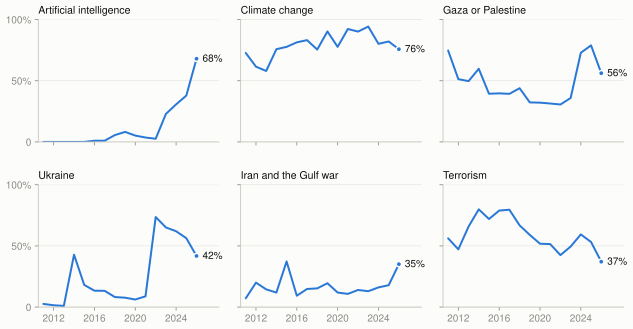
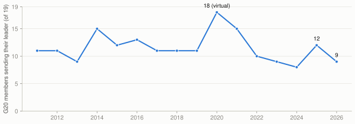
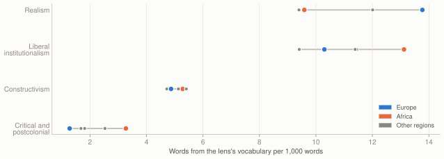
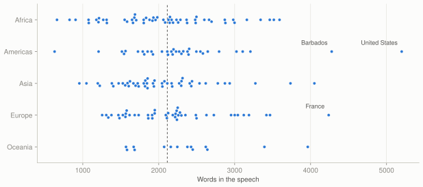

Four things the debate tells us
Why it matters
The debate is a signal, not a decision
Nothing is voted on in the general debate. Its value is as a signal. It is the one day each government chooses, unprompted, what to put before the rest of the world, and who to send to say it. Readers of the debate usually want answers to five questions, and this page takes them in turn.
1 · What is on the world's mind
AI went from the margins to the shared agenda in three years
In 2022, 3% of speeches mentioned artificial intelligence. This year 68% did. Only climate change is raised more often (76%), and it has been raised by at least 58% of speeches in every year since 2011.
AI is raised in every region: by at least 50% of the speeches in each, led by Europe at 84%. Terrorism went the other way: 37% of speeches mentioned it, the lowest since at least 2011.
So what: governments now bring AI to the UN as a shared question of rules and risk, not only as a matter for technology firms or the richest economies.
Share of speeches mentioning each issue, 2011–2026

Who mentioned artificial intelligence in 2026
All sixteen issues tracked in 2026
2 · Whose wars count
Beyond Europe and Asia, the wars of recent years are fading from view
Attention to the wars of recent years is falling. Gaza or Palestine fell from 79% of speeches in 2025 to 56%, and Ukraine from 74% in 2022 to 42%. Attention went to the Gulf instead: 35% of speeches mentioned Iran or the Gulf war, against 18% last year.
The map shows the split. Europe is the only region where most speeches name Ukraine (91%). It also leads on Gaza or Palestine (75%), just ahead of Asia (70%). Most speeches from the Pacific (71%) and the Americas (62%) name neither war.
Who named Ukraine, and who named Gaza or Palestine
Each region also brought its own agenda. In 11 of the 12 topics a statistical model finds in the speeches, more than half the speeches come from a single region: the Pacific's oceans and fossil fuels, the Caribbean's reparatory justice, the Sahel's security and the Gulf's stability. The model groups words used together; the topic names are ours.
How much of each region's speeches each topic accounts for
3 · Who showed up
The most powerful were the least likely to come
59% of member states sent a head of state or government, down from 65% last year. The fall is sharpest among the largest economies: 9 of 19 G20 members sent their leader, against 12 in 2025. Outside the G20, 61% did.
Those who sent a deputy or a minister include Canada, China, Germany, India, Indonesia, Italy, Mexico, Russian Federation, Saudi Arabia and South Africa.
So what: smaller states still treat the debate as their global stage. The largest powers increasingly send someone else, which says as much about how they rank the UN as anything their envoys say.
G20 members sending their head of state or government

Who each country sent in 2026
Who the five permanent members of the Security Council sent
| Member | 2025 | 2026 |
|---|---|---|
| United States | Donald Trump, President | Donald Trump, President |
| China | Li Qiang, Premier of the State Council | Han Zheng, Vice President |
| Russian Federation | Sergey Lavrov, Minister for Foreign Affairs | Sergey Lavrov, Minister for Foreign Affairs |
| United Kingdom | David Lammy, Deputy Prime Minister | Andy Burnham, Prime Minister |
| France | Emmanuel Macron, President | Emmanuel Macron, President |
4 · How states see the order
States argue over the rules, not for a new order
89% of speeches appeal to the UN Charter or international law. Only 12 use the word “multipolar”, 6 speak of spheres of influence and 17 of a rules-based order. Speakers want the existing rules applied and reformed, not replaced.
What differs is who they think bends the rules. African speeches accuse others of double standards (19%) and criticise unilateral sanctions (32%). European speeches talk of great powers (23%) and the veto (27%).
Phrases that separate one reading of world order from another
5 · Through international relations theory
Europe frames the world as security; Africa frames it as justice
European speeches use realist vocabulary at 13.8 words per 1,000, against 9.6 in African ones. African speeches lead on liberal-institutional vocabulary (13.1) and use critical and postcolonial vocabulary 2.6 times as often as European ones.
Each lens is measured by counting its signature words. That shows the vocabulary a speech leans on, not the argument it makes, since the same word can serve different theories. The readings below are our interpretation; the quotes are the speakers' own.
Each lens's vocabulary by region, per 1,000 words

Where each lens is strongest: countries whose speech leans that way
Realism
States are the main actors, the system has no government above them, and so each pursues power and security. Realists expect speeches to dwell on threats, force, deterrence and the balance of power.
Strongest in Europe (13.8 per 1,000 words), weakest in Oceania (9.4). 41% of Europe's speeches lean this way. The vocabulary gathers where war is close. Ukraine appears in 91% of European speeches, and nuclear weapons in 46% of European and 44% of Asian ones, against 13% of African ones. Much of the word “security” also covers food, climate and health, which flatters this count.
Vocabulary counted and the speeches where it is strongest
“It must be a real participant in negotiations on the post-war security architecture of the continent after the end of the war.”
Iliana Iotova, Bulgaria · the UN interpreters’ English · source
“In reality those threats to international peace and security are as dangerous as conventional wars.”
Edgars Rinkēvičs, Latvia · the delegation’s English text · source
“It is an effective deterrent action against those who threaten the security and stability of states.”
Abdullah Abdulkader Al Alimi-Bawzer, Yemen · the UN interpreters’ English · source
Liberal institutionalism
Cooperation is possible and lasting when it runs through institutions, law and trade, which make promises credible. Liberals expect speeches to appeal to the Charter, multilateralism, treaties and reform.
Strongest in Africa (13.1 per 1,000 words), weakest in Americas (9.4). 30% of Africa's speeches lean this way. Its words are the debate's common ground: 89% of speeches invoke the UN Charter or international law. The difference lies in use. Some speakers defend today's institutions; others, such as Liberia, cite them to demand a larger say. 40 speeches call for Security Council reform, and 39 name the veto.
Vocabulary counted and the speeches where it is strongest
“Multilateralism that protects human rights, strengthens democracy and advances gender equality.”
António Costa, European Union · the delegation’s English text · source
“At the heart of this reform must be a fairer voice and a vote for developing countries within the Bretton Woods institution, the world Bank and the International Monetary Fund, whose governance reflects the world of 1945 rather than the word of today.”
Joseph Nyuma Boakai, Liberia · the UN interpreters’ English · source
“Nigeria stands by the Charter and its promise of a world in which diplomacy prevails over coercion, cooperation over isolation and international law over the arbitrary exercise of power.”
Kashim Shettima, Nigeria · the delegation’s English text · source
Constructivism
What states want depends on who they believe they are. Identity, history, norms and shared values shape interests, so constructivists read speeches for how a state tells its own story.
Strongest in Oceania (5.4 per 1,000 words), weakest in Asia (4.7). 14% of Oceania's speeches lean this way. It is the most evenly spread lens: every region uses its vocabulary at a similar rate. History, identity and dignity are how every state explains itself, whatever its interests.
Vocabulary counted and the speeches where it is strongest
“We carry inherited memories, values, rich cultures, and distinct identities.”
John Dramani Mahama, Ghana · the delegation’s English text · source
“Your advocacy reminds us that beyond our national borders, political differences, cultures and beliefs, we belong to one human family and share one Earth.”
James Marape, Papua New Guinea · the delegation’s English text · source
“Among the many proposals which we all present, we want to highlight the power that the most populous and perhaps most solidarity-inspired countries in the World are acquiring, in the BRICS, always seeking, based on Peace and Security, better conditions for Life, and for Everyone's right to solidarity and complementary development.”
Valdrack Ludwing Jaentschke Whitaker, Nicaragua · the delegation’s English text · source
Critical and postcolonial
The order itself distributes power and wealth unequally, and its history of empire still shapes it. These approaches read speeches for grievance about structure: colonialism, reparations, sanctions, debt and double standards.
Strongest in Africa (3.3 per 1,000 words), weakest in Europe (1.3). 23% of Africa's speeches lean this way. Grievance about the order's structure comes mainly from Africa and the Caribbean. Reparations appear in 29% of speeches from the Americas and 21% of African ones. 32% of African speeches criticise sanctions, and 19% accuse others of double standards, a charge no speaker from Americas makes.
Vocabulary counted and the speeches where it is strongest
“Reparatory justice requires acknowledging responsibility, repairing continuing harm and correcting structures that still reproduce inequality.”
Walton Alfonso Webson, Antigua and Barbuda · the delegation’s English text · source
“Since the passage of the historic resolution, we welcome the positive overtures from many countries and institutions to join the dialogue on reparatory justice and restitution. 7 The Netherlands, Germany and France have made positive moves to join the conversation on reparatory justice.”
John Dramani Mahama, Ghana · the delegation’s English text · source
“This resolution and the subsequent establishment of the High Level Global Advisory Council on Reparatory Justice is a very significant step in the search for reparations for the transatlantic slave trade and the enslavement of Africans in the Americas and the Caribbean.”
Philip J. Pierre, Saint Lucia · the delegation’s English text · source
Reading the debate as a whole
No single theory owns the debate. Of 194 speeches, 61 lean towards none of the four lenses. The rest divide close to evenly among them, so the debate is a mix of vocabularies rather than a contest between them.
Where a state stands shapes the words it reaches for. Europe, with a war on its border, talks of security and deterrence. Africa, seeking more voice in institutions it did not design, talks of reform, law and justice. Small island states talk of the ocean and survival. The pattern fits realism's claim that position drives interest, and constructivism's claim that each region tells a different story about the same order.
The vocabulary of a new order is rare. “Multipolar” appears in 12 speeches, “spheres of influence” in 6, and “rules-based order” in 17. Speakers argue about the order through its existing institutions rather than naming a replacement.
6 · The words they used
“Security” and “peace” still lead; each region has words of its own
“Security” and “peace” are still the debate's commonest words. “Trust” also ranks high, because it is this session's theme. The pairs say more: “security council”, “human rights” and “artificial intelligence” lead them.
Each region's distinctive words read like its agenda: the Sahel and debt for Africa, the Caribbean and crime for the Americas, Russia and aggression for Europe, the ocean and sea-level rise for the Pacific.
The thirty commonest words
The twenty commonest word pairs
The words each region uses more than the rest
How the speeches read
Speeches are long, dense and mostly delivered as written
The median speech runs to 2,117 words, about 15 to 20 minutes. The written statements read at a median Flesch–Kincaid grade of 12.7, around first-year university, with 18.2 words to a sentence.
Speakers deliver most of what they file: the median speech says 92% of its written statement. The gaps come from speeches cut short and from speakers who switch language mid-speech.
Every speech, by length and region

Reading grade of the written statements
Share of the filed statement actually said
Detail
What stood out
The five longest
- United States of America: 5,200 words
- Barbados: 4,278 words
- France: 4,238 words
- Israel: 4,050 words
- Vanuatu: 3,963 words
The five shortest
- Nicaragua: 629 words
- Rwanda: 660 words
- Eritrea: 826 words
- Equatorial Guinea: 905 words
- Oman: 955 words
The five densest
- Nicaragua: grade 22.1, 44.9 words a sentence
- Oman: grade 21.3, 39.8 words a sentence
- Angola: grade 21.3, 38.9 words a sentence
- Mongolia: grade 20.4, 33.7 words a sentence
- Turkmenistan: grade 19.1, 26.3 words a sentence
The five plainest
- Bahamas: grade 6.6, 11.3 words a sentence
- Bhutan: grade 7.7, 9.1 words a sentence
- Netherlands (Kingdom of the): grade 7.7, 13.9 words a sentence
- Belgium: grade 8.1, 12.7 words a sentence
- Republic of Moldova: grade 8.1, 13.0 words a sentence
The five closest pairs
- Burkina Faso and Mali: similarity 0.39, longest shared passage 9 words
- Kuwait and Saudi Arabia: similarity 0.39, longest shared passage 10 words
- Mauritius and Cambodia: similarity 0.38, longest shared passage 6 words
- Niger and Burkina Faso: similarity 0.36, longest shared passage 8 words
- Gambia and Zambia: similarity 0.36, longest shared passage 5 words
The five most distinctive
- Eritrea: its own words: zero-sum, injustices, annual, novel, overarching
- Nicaragua: its own words: plagues, brother, misery, harmony, proposals
- Syrian Arab Republic: its own words: combated, syria, evil, damascus, started
- Albania: its own words: machine, machines, manipulation, automation, artificially
- Rwanda: its own words: drc, mercenaries, uncertain, eastern, exclusion
The five lowest
- Luxembourg: 41% of the filed text said
- Guatemala: 46% of the filed text said
- Canada: 52% of the filed text said
- Senegal: 61% of the filed text said
- Jordan: 62% of the filed text said
Detail
Eight speeches worth reading in full
Chosen because each carries one thread of the story. The notes are our reading; the quotes are checked word for word against the source, and the figures come from the data.
Palestine spoke by video, for the second year running
The State of Palestine is an observer, not a member. Its president addressed the debate by pre-recorded video, after the delegation was refused the visas it needed to reach New York.
“For the second consecutive year, the Palestinian delegation was denied the entry visas required to reach New York and participate in the meetings of the United Nations General Assembly in person.”
Mahmoud Abbas, State of Palestine · the UN interpreters’ English · sourceThe longest speech, and a claim to be reforming the UN
The United States used more words than any other delegation. It presented itself as the UN's reformer, citing what it called the most sweeping reforms in the organisation's history.
“Two and a half centuries after the cause of liberty found its home on this continent, I can report to you with pride that America is back And our country is stronger today than ever before.”
Donald Trump, United States of America · the UN interpreters’ English · sourceUkraine quoted Washington back to the room
President Zelensky built a passage around a post by the US President calling the war “ridiculous and never-ending”, and closed it with a pointed exception.
“I do not know anyone who is openly for this war… Except one man.”
Volodymyr Zelenskyy, Ukraine · the delegation’s English text · sourceIran's account of the Gulf war
Mentions of Iran and the Gulf war doubled this year. Iran's president told it as a war of aggression against his country.
“America and Israel attacked us, equipped with the latest technology and weapons systems, and our people stood steadfast.”
Masoud Pezeshkian, Iran (Islamic Republic of) · the UN interpreters’ English · sourceThe Secretary-General said what few members would
In his last general debate before his term ends in December 2026, António Guterres treated a multipolar world as a fact and argued over the shape it should take. Few member states used the word at all.
“We are clearly moving towards a multipolar world.”
António Guterres, Secretary-General of the United Nations · the delegation’s English text · sourceA small island that calls itself a large ocean state
Tuvalu's statement is the clearest case of the Pacific's agenda: land lost to the sea, reclaimed metre by metre, and a claim to matter by the ocean it holds.
“Tuvalu may have only 26 square kilometres of land, but we are custodians of some 750,000 square kilometres of ocean, which makes Tuvalu a large ocean state.”
Feleti Teo, Tuvalu · the delegation’s English text · sourceThe Sahel states spoke as a confederation
Burkina Faso's foreign minister spoke for the Confederation of Sahel States it forms with Mali and Niger. The two speeches closest to it in vocabulary are Mali's and Niger's, its partners in the confederation.
“This blind and sustained violence has been sustained, armed, financed and instrumentalized by criminal networks and their supporters intent on subjugating the Sahel through fear.”
Karamoko Jean Marie Traoré, Burkina Faso · the UN interpreters’ English · sourceChina sent its Vice President, and a pitch to the Global South
China was represented by its Vice President, a step down from its Premier last year. The speech cast China as the advocate of developing countries.
“China has always spoken up for the global South, stood up for the legitimate rights and interests of developing countries, and continued to work toward a more just and equitable global governance system.”
Han Zheng, China · the UN interpreters’ English · sourceExplore
Country by country
Colour the map by any issue, phrase, topic or lean, then click a country, or pick one from the list, to see its speech in detail.
All speeches
Search by delegation, speaker, topic or lean. Click a column to sort. Each delegation links to its UN page, with the video, the filed statement and the transcripts.
Method and caveats
A deterministic pipeline. No AI model or web search reads or splits the speeches. Every figure on this page is computed from the texts by fixed rules, and every quote is checked word for word against its source before the page is built.
Texts. Each speech's English comes from the delegation's written statement where one exists (124 speeches), and otherwise from the UN's machine transcript of the English interpretation (70). A transcript of an interpreted speech is the interpreters' English, not the speaker's words.
History. 2011–2025 figures use the UN General Debate Corpus (Jankin, Baturo and Dasandi), whose English for 2024 is machine-translated and for 2025 machine-transcribed. The same word lists are applied to every year.
Issues and phrases. A speech raises an issue when it names it at least once. The lists are in the source code.
Topics. TF-IDF over words and word pairs, with names, salutations and transcript filler removed, and a twelve-topic NMF model with a fixed seed. Topic models shift when the texts change, so the labels are reviewed on every rebuild, and the build stops if a topic has none.
Theory lenses. Word lists matched as prefixes, counted per 1,000 words and standardised across speeches. “Trust” is left out because it is this session's theme.
Maps. Natural Earth boundaries (public domain), simplified to about 15 km and drawn in the browser. States too small to see are drawn as dots. Hatched areas gave no speech, or are not UN members.
Words. Counts leave out common English words, names, salutations and transcript filler. Region words use weighted log-odds with an informative prior; each speech's distinctive words are its highest TF-IDF terms.
Highlights. The eight speeches worth reading are an editorial choice, and their notes are our reading. Their quotes are checked like every other quote on the page.
Reproduce it. The code and data are at github.com/jeremychia/unga-speeches, and the figures behind this page are published beside it.